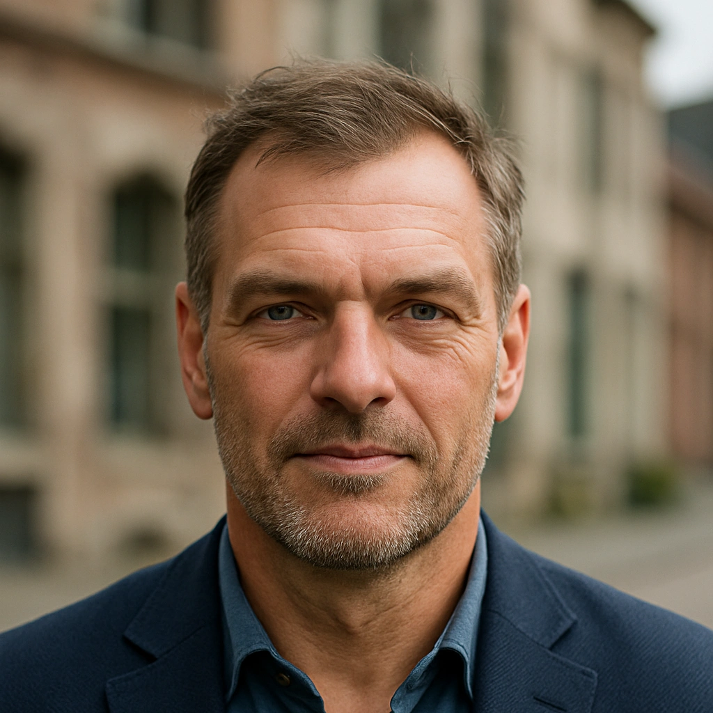

...de villageois
Brigitte Mancron : «J’ai passé de nombreuses heures assise sur ma terrasse, à attendre que les oiseaux viennent picorer les graines que j’avais mises dans la mangeoire. Quand j’ai appris qu’il s’agissait d’engins fabriqués par l’homme, ça m’a fait un choc. Aujourd’hui, je me méfie des oiseaux. Peut-être que chacun d’eux est un robot.»
Thierry Zenry : «Je croyais sincèrement qu’il s’agissait d’une nouvelle espèce qui s’était installée dans la montagne. La région abrite déjà de nombreuses espèces d’oiseaux, alors une de plus ne m’étonnait pas. J’ai appris, en discutant avec un secouriste, que ce que je prenais pour une nouvelle espèce était en fait un essaim de drones. Sur le moment, cela me semblait étrange, mais si la technologie peut aider à retrouver quelqu’un, je pense qu’il ne faut pas s’en priver.»
...de la personne disparue
Max Ferstaffen : «Je me suis égaré lors d'un trail dans les Vosges. J'ai tenté de contacter les secours, mais je n'avais pas de réseau. Ce sont donc mes proches qui ont donné l'alerte. Cependant, personne ne savait exactement où je me trouvais, ce qui a nécessité un déploiement important de moyens pour les recherches. Ils ont notamment utilisé des drones, ce qui m'a dans un premier temps effrayé. Je vous assure que ce n'est pas très rassurant de voir une vingtaine d' “oiseaux” tourner autour de vous pendant des heures.»